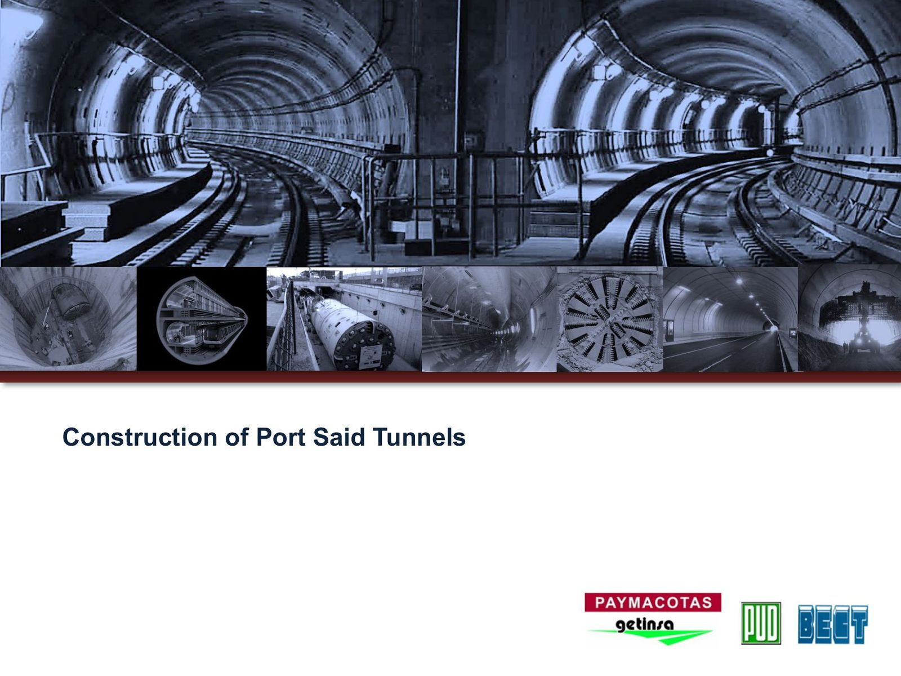

Three Tunnels under the Suez Canal
Infrastructure planning · Port Said (Suez Canal), Egypt
Feasibility study, design and tender documents for three tunnels under the Suez Canal at Port Said, for the Egyptian National Authority for Tunnels, with Paymacotas, Getinsa and BECT.
Port Said: In 2024, it had a population of 790,000 people. Source
Partners
PaymacotasGetinsaBECT
Client
Egyptian National Authority for Tunnels
More from Port Said
 Abu Qir City and Port ExtensionAbu Qir, Alexandria · 2021
Abu Qir City and Port ExtensionAbu Qir, Alexandria · 2021 Gargoub New Port CityGargoub, Matrouh · 20211972Al-Tahrir Bus TerminalsCairo · 19722020Golden GateNew Cairo · 2020-20212011Regional Vision for the North Coast and Tourism Development Master Plan for Fuka-MatrouhFuka-Matrouh sub-region, North Coast · 2011
Gargoub New Port CityGargoub, Matrouh · 20211972Al-Tahrir Bus TerminalsCairo · 19722020Golden GateNew Cairo · 2020-20212011Regional Vision for the North Coast and Tourism Development Master Plan for Fuka-MatrouhFuka-Matrouh sub-region, North Coast · 2011 Heliopark Concept MasterplanNew Cairo · 2021
Heliopark Concept MasterplanNew Cairo · 2021